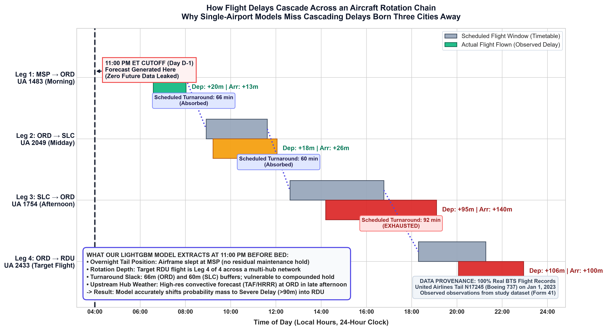
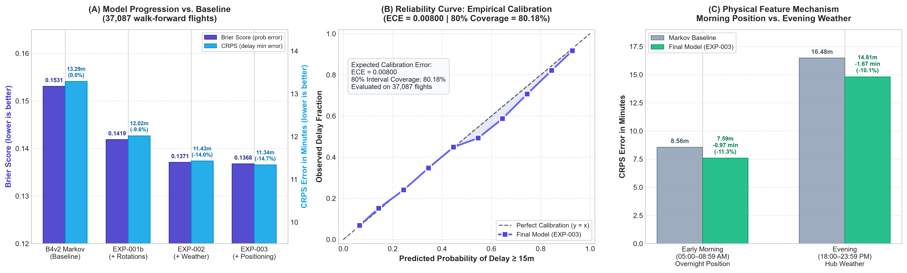

Research figures
Aircraft delay propagation and model evaluation results.
Research benchmark figures. The EXP-003 results reflect walk-forward re-evaluation with the corrected, leak-free position-feature pipeline (position-last-row-v2). These figures evaluate the development period and do not measure live forecast accuracy.
How Flight Delays Cascade Across an Aircraft Rotation
Demonstrates physical delay propagation using real USDOT BTS records for United Airlines N17245 (Boeing 737) on Jan 1, 2023. Highlights buffer absorption, afternoon hub hold exhaustion, and the strict 11:00 PM cutoff.

Walk-Forward Benchmark & Empirical Calibration
Features the 14.65% CRPS error reduction and 10.70% Brier score improvement across 37,087 walk-forward flights against the B4v2 Markov baseline, alongside the 10-decile empirical calibration curve (ECE = 0.00800, 80% coverage = 80.18%).
